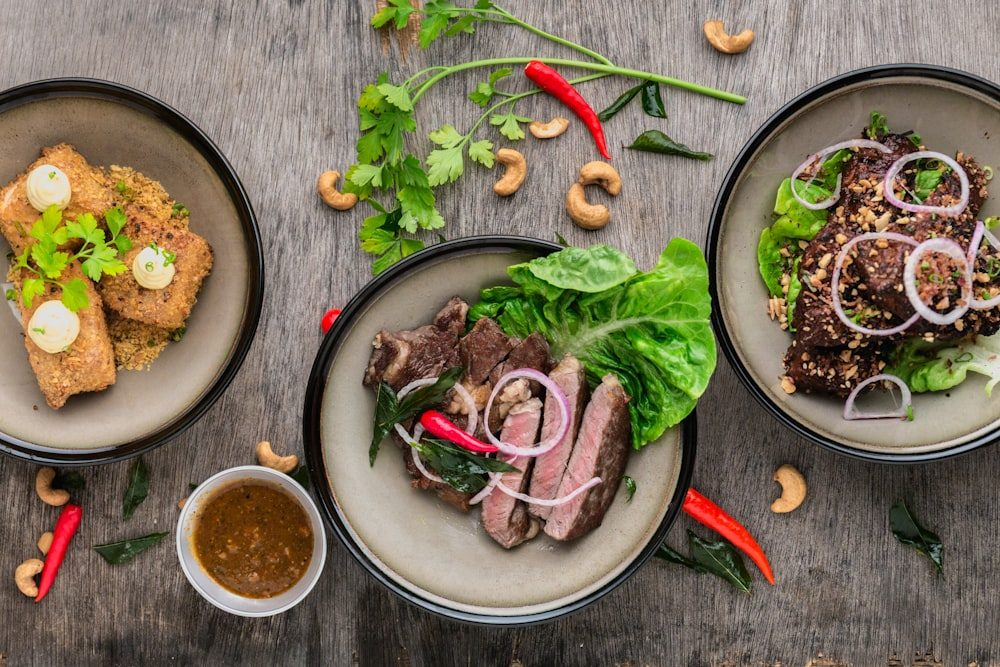

A nossa história

Manuel Sabor · Chef e proprietário
A casa abriu em 1978 com a minha avó ao fogão e o meu avô à porta. Eram doze lugares e um prato por dia — o que houvesse no mercado nessa manhã. Ainda hoje é assim que decidimos o prato do dia.
Assumi a cozinha em 2009. Mudei os fornos, mudei a sala, não mudei os cadernos. As receitas continuam escritas à mão, com a letra dela, e há coisas que não se tocam: o arroz de forno, a sopa e a sobremesa da casa.
Compramos no mercado a duzentos metros daqui. Se o peixe não estiver bom nesse dia, não há peixe — preferimos dizer que não do que servir uma coisa em que não acreditamos.
«Se não o servisse à minha mãe, não o sirvo a si.»
Compramos de manhã no mercado ao lado. O que não estiver bom não entra na ementa.
Os cadernos da minha avó, escritos à mão, continuam a ser a nossa base.
Carta pequena e escolhida, com produtores que conhecemos pelo nome.
A melhor forma de perceber se somos a casa certa para si é aparecer.
Reservar mesa